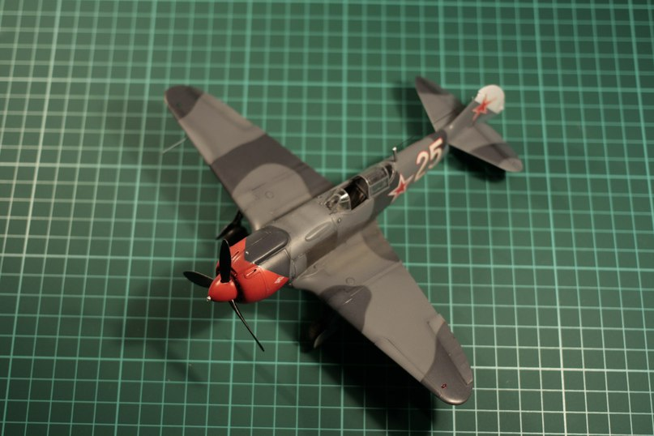

Вопрос интересный. Ведь в наше время свободного время на хобби зачастую остается мало, а результат хочется получить как можно скорее. Но моделизм не терпит спешки! И торопиться при сборке модели — значит испортить её. Что же делать? Как построить хорошую модель за выходные? Частый автор наших рубрик и неоднократный участник различных конкурсов и турниров по скоростной сборке моделей Иван Куликов хочется поделиться своими советами на эту тему. Слово автору. С чего бы начать? Думаю для начала стоит понять основные факторы быстрой и при этом качественной сборки. Для сборки стоит выбирать качественную модель с хорошей стыковкой и деталировкой «из коробки». Нужно использовать правильную химию, с коротким временем высыхания. К сборке надо приступать с четким пониманием объема работы и переделок, что бы не погрязнуть во множестве доработок, зачастую сделанных «для души», но мало заметных на финальном результате. Важно соблюдать последовательность сборки, разбивая модель на подсборки, что бы в процессе не приходилось постоянно заниматься разными вещами. Остановимся на каждом из пунктов по подробнее. Если вам хочется быстро построить модель — не стоит брать для сборки что-то сложное или некачественное. Большое число деталей или необходимость обрабатывать каждую детальку и стык сведут на нет все попытки быстро получить готовый результат. Так что никаких кораблей, бтт с супер-деталировкой, ЛНД моделей и бюджетных наборов техники от АРК,ВЭ и прочих. Но это не значит что выбор моделей окажется невелик. Новые модели от Звезды, Тамии, ICM, Airfix, различные модели от китайских фирм — все это можно брать для быстрой сборки. Масштаб может быть любым, разве что всякие крупные масштабы, навроде 1/32 для авиации или 1/16 для БТТ — не лучший выбор) примеру за пару выходных можно спокойно построить отличный Як-3 в 1/48 или новый Т-34/85 в 1/35 или 1/72 от Звезды, И-16 или Як-52 в 1/48 от АРК, почти любую модель от Тамии в 1/35 или 1/48 и тд. Главное что бы в модели было не очень много деталей, была хорошая стыковка и неплохая деталировка. Сейчас на рынке немало таких моделей. А для понимания того, что лежит в коробке лучше всего воспользоваться поиском в сети и посмотреть обзоры на модель и её стройку. Ил-2 от Тамии в масштабе 1/48 собранный за три дня работы по вечерам Основа качественного результата — правильный выбор химии. Чтобы стройка модели не прерывалась долгим ожиданием высыхания клея, шпаклевки и краски — нужно выбирать правильные расходники. Привычный модельный клей, что обычный, что супер-текучий сохнет довольно быстро. Но полностью высыхает такой клей долго, и проклеенные им швы между крупными деталями со временем могут легко дать усадку, что критично при быстрой сборке модели. Так что применять такой клей стоит там, где шов проходит по реальному стыку деталей и не требует заделки. Ну и для крепления различных мелких деталей. Супер-жидкий клей от Тамии — оптимальный выбор для работы с большинством мелких и средних деталей Для стыковки и одновременно для заделки швов на крупных деталей лучше всего подойдет цианакрилат, он же — «супер-клей». Причем — с активатором высыхания. В этом случае клей послужит и клеем и шпаклевкой. А активатор позволит добиться мнгновенного высыхания клея, который еще и не дает усадки. То есть через 30 секунд после склейки деталь уже можно будет спокойно обрабатывать, шкурить и тд. Конечно при работе с таким клеем стоит учитывать тот факт, что склеивает детали он мнгновенно, а при высыхании становится тверже пластика и требует обработки наждачкой от 600 номера. Так же на супер-клей с активатором удобно клеить различные мелкие детали, требующие точного и быстрого позиционирования. Цианакрилатный клей — лучший клей и шпаклевка при быстрой сборке Обычной модельной шпаклевке тоже найдется место. Нанесенная тонким слоем она высыхает за минут 30 и позволяет править мелкие косяки поверхности, к примеру царапины, мелкие каверны на супер-клее и тд. Усадка тут не страшна, ведь слой будет тонким. Белая финишная шпаклевка от Тамии — хороший выбор для быстрого устранения мелких косяков на поверхности модели При сборке модели Ил-2 фюзеляж был склеен на супер-клей,а мелкие огрехи по стыку его половинок были зашпаклеваны белой шпаклевкой от Тамии От применения грунтовки тоже лучше не отказываться. Привычные модельные грунты высыхают «на отлип» за 10-15 минут и через пол часа по ним уже можно спокойно красить. А проявить поверхность модели перед покраской и улучшить адгезию краски никогда не будет лишним. Нитро-грунт от Тамии или Ганзы будет оптимальным выбором. Грунтовка от Тамии — хороший выбор в любой, в том числе и быстрой стройке А вот краску лучше всего выбрать акриловую, на водной основе. То есть акрил от Валлехо, Зип, Пацифик88, Мастер-Акрил, MIG. Вся эта краска обладает быстрым временем высыхания и позволяет наносить цвета с минимальным перерывом на просушку. Да, другая сторона медали — частое налипание краски на игле аэрографа, но с этим можно бороться, добавляя в краску замедлитель высыхания и механически очищая кончик иглы. Ну и само-собой стоит сразу брать готовые цвета, что бы не возиться с замешиванием красок. Готовый набор красок от MIG. С его помощью за один вечер можно спокойно нанести камуфляж на модель немецкого самолета После нанесения краски достаточно подождать 30 минут перед нанесением масок. Стоит конечно соблюдать осторожность, но в целом на загрунтованной поверхности даже водный акрил держится неплохо. Модель окрашена в базовый цвет (акрил ЗИП), нанесены маски для камуфляжа из ленты Tesa Затем задут второй цвет камуфляжа и после подсыхания краски, через несколько минут маски сняты. Нанесения камуфляжа на верх модели Су-2 заняло меньше часа, с учетом ожидания высыхания краски. Наибольшего времени на высыхание требует глянцевый лак, который наносится под декали и смывку. Самые удобные в работе глянцевые лаки, такие как Х-22 или Футура требуют как минимум 3-4 часов для высыхание. Зато после этого на них уже можно переводить и приваривать декали, наносить смывку и тд. Самим декалям для высыхания будет достаточно часа. Модель покрыта Футурой (глянцевый акриловый лак) под декали. Между нанесением лака и переводом декалей прошло 3 часа. Финишный лак зачастую наносится в самом финале работ и высыхает «на отлип» максимум за час, так что с ним не должно быть проблем. Саму стройку модели нужно вести с четким пониманием того, что нужно сделать. Ведь начатые посреди стройки запилы и доработки половины модели легко могут превратить легкую сборку на пару выходных в долгострой на месяцы. Так что изкоробочная сборка или сборка с мелкими косметическими доработками — лучший выбор для быстрого создания модели. Установить на неё пару мелких наборов афтермаркета — это хорошо и совсем не лишне, но вот пихать в какой-нибудь самолет профи-пак от Эдуард или менять все крепления шанцевого инструмента на танке — плохая идея. А еще стоит здраво оценивать целесообразность всех этих доработок. Ведь изрядную их часть после сборки может быть не видно. Так нужен ли такой суслик?) Замена нескольких мелких деталей на фототравленые — украшение модели, которое не займет много времени. К примеру тут на бомбах установлены фототравленые вертушки. Высверленный ствол пушки — хорошая доработка, которая не требует много времени и сил А вот доработка всего и вся на модели — сомнительное решение для быстрой сборки. Ну и главное — это четко выстроенный график и схема сборки модели. Тут понадобится заняться небольшим самоконтролем и планированием. Ведь лучше делать все операции по сборке модели последовательно, а не вперемешку. Сначала собрать все детали и обработать стыки. Затем покрасить их, а потом покрыть лаком и сделать смывку. А не одновременно красить модель в базовые цвета и только начинать собирать ходовую часть или шасси. Так что для начала надо критично взглянуть на инструкцию и возможно отойти от предложенной в ней последовательности сборки, разбив модель на подсборки, в которых её будет удобно обрабатывать, красить и потом собирать в единое целое. Собираемая по подсборкам модель — отдельно собраны крепные детали, отдельно — мелочевка Еще одна хитрость — начинать работу не со сборки основных деталей, а с мелочевки, которая должна ставиться в последний момент. Это помогает избежать соблазна в конце стройки сделать её тяп-ляп, лишь бы быстрее закончить модель. Вот и все хитрости. Главное четко выстроить процесс работы и не спешить, а просто делать все быстро. Но аккуратно и качественно. Автор статьи на турнире сборки модели за 24 часа И готовая модель Ла-5ФН, собранная за 24 часа И готовая модель Ла-5ФН, собранная за 24 часа
